Simulating Missing Data with amputeScaleScore
Adam Van Iwaarden
June 10, 2021
Introduction
In preparation for the analysis of student assessment data in 2021, and given the assumption of reduced test participation in many states due to the ongoing COVID-19 pandemic, simulations of missing data that produce varying degrees and patterns of missingness were required. The amputeScaleScore function allows for customized simulation of data missing completely at random (MCAR), missing at random (MAR) and missing not at random (MNAR). These patterns can be specified to depend on a variety of student and institutional level variables.
This vignette provides a brief introduction of how to use the amputeScaleScore function to simulate, explore and analyze missing data patterns using the sgpData_LONG_COVID data from the the SGPData package. This simulated data conforms to the data naming and structure that is required for data analysis using the SGP package.
Function Arguments
The following provides an explanation of the arguments a user can provide in the amputeScaleScore function.
require(cfaTools)## Loading required package: cfaTools args(amputeScaleScore)## function (ampute.data, additional.data = NULL, compact.results = FALSE,
## growth.config = NULL, status.config = NULL, default.vars = c("CONTENT_AREA",
## "GRADE", "SCALE_SCORE", "ACHIEVEMENT_LEVEL"), demographics = NULL,
## institutions = NULL, ampute.vars = NULL, ampute.var.weights = NULL,
## reverse.weight = "SCALE_SCORE", ampute.args = list(prop = 0.3,
## type = "RIGHT"), complete.cases.only = TRUE, partial.fill = TRUE,
## invalidate.repeater.dups = TRUE, seed = 4224L, M = 10)
## NULL-
ampute.data- The complete dataset in which to create missing values
- Here the COVID impacted dataset from SGPdata:
SGPdata::sgpData_LONG_COVID
-
additional.data = NULL- The function will return only data that is required for a SGP analysis (based on
growth.config) or a status analysis (based onstatus.config). This allows for the addition of more data (e.g. 2019 grades not used as priors).
- The function will return only data that is required for a SGP analysis (based on
-
compact.results = FALSE- By default (
FALSE), the function will return a list of longitudinal datasets with the current (amputed) and prior (unchanged) student records. This is helpful for diagnostics and ease of use, but also produces redundant prior data. Setting this argument toTRUEreturns a singledata.tableobject with a TRUE/FALSE indicator column added for each requested amputation. This flag can be used to make theSCALE_SCORE(and/or other variables)NAin subsequent use cases.
- By default (
-
growth.config = NULL- An elongated SGP config script. This needs to have an entry for each grade/content_area/year cohort that will be analyzed in subsequent simulations.
-
status.config = NULL- An elongated SGP config script. This needs to have an entry for each grade/content_area/year cohort that will be analyzed in subsequent simulations.
- Unlike a
growth.configentry,status.configentries use data from the same grade, but from a prior year (i.e. not individual variables). For example you might predict missing 2021 3rd grade ELA scores based on 2019 3rd grade school mean scale score, FRL status, etc.
-
default.vars = c("CONTENT_AREA", "GRADE", "SCALE_SCORE", "ACHIEVEMENT_LEVEL")- variables that will be used in extracting cohort records (subject and grade) and other variables from the data that the user may want returned in the amputed data.
-
demographics = NULL- Demographic (factor/character) variables to use and/or return in the final dataset.
- For example:
c("FREE_REDUCED_LUNCH_STATUS", "ELL_STATUS", "IEP_STATUS", "ETHNICITY", "GENDER")
-
institutions = NULL- Institution IDs that will be used/or returned in the amputed data.
- For example:
c("SCHOOL_NUMBER", "DISTRICT_NUMBER")
-
ampute.vars = NULL- Intersection of
default.vars,demographicsandinstitutionsthat will be used in the construction of the weighted scores that define the probability of being missing. Any institution included will be used to construct institution level means of other student levelampute.vars. - For example, with
c("SCHOOL_NUMBER", "SCALE_SCORE", "FREE_REDUCED_LUNCH_STATUS"), student level scores and demographics will be used along with their associated school level mean scores and proportion FRL (4 total factors). - The default (
NULL) means that no factors are considered, creating a “missing completely at random” (MCAR) missing data pattern.
- Intersection of
-
ampute.var.weights = NULL- Relative weights assigned to the
ampute.vars. Default isNULLmeaning the weighted sum scores will be calculated with equal weight (=1). A named list can be provided with the desired relative weights. For example,list(SCALE_SCORE=3, FREE_REDUCED_LUNCH_STATUS=2, SCHOOL_NUMBER=1)will weight a student’s scale scores by a factor of 3 and FRL by 2, with all (any otherampute.vars) remaining at the default of 1. - School level aggregates are included in the example above. Note that differential weights for institutions should be placed at the end of the list. If institution IDs (e.g., SCHOOL_NUMBER) are omitted from the list, the aggregates will be given the same weight as the associated student level variable. In the given example,
SCALE_SCOREand school mean scale score would be given a relative weight of 3. - This argument is ignored when
ampute.vars = NULL.
- Relative weights assigned to the
-
reverse.weight = "SCALE_SCORE"- The current default for
ampute.args$typeis"RIGHT", which means that students with high weighted scores have the highest probability for amputation.
This makes sense for high % FRL schools, but not for high achieving students and/or students in high achieving schools. This function inverses the variable(s) individual (and institutional mean) value(s) so that higher weight is given to lower scores/means. - This argument is ignored when
ampute.vars = NULL.
- The current default for
-
ampute.args = list(prop=0.3, type="RIGHT")- variables to be used in the
mice:ampute.continuousfunction. Currently onlypropandtypecan be modified. See?mice::ampute.continuousand?mice::amputefor more information. - The
propargument is inexact and has required some modification. Although performance has been improved, it is still imprecise, particularly for values away from 0.5 (50% missing). Also, the max missingness is 85%, and for that the user needs to setprop=0.95or greater. - Note that
propgives a total proportion missing, which accounts for missingness already included in the data due to students with incomplete longitudinal data histories. For example, if a cohort starts with 5% students missing due to incomplete histories, an additional 25% will be made missing to get to the 30% (default) missingness. - This last point has been dealt with in some regards with the next argument, which removes these cases first.
- variables to be used in the
-
complete.cases.only = TRUE- Should cases without the most recent prior and current score be removed?
- This removes students with partial longitudinal histories from the most recent prior (e.g., 2019) to the current year (e.g., 2021), producing a “complete” dataset that is easier to interpret and use in subsequent imputation simulations.
-
partial.fill = TRUE- Should an attempt be made to fill in some of the demographic and institution ID information based on students previous values?
- Part of the process of the
amputeScaleScorefunction is to take the long data (ampute.data) and then first widen and then re-lengthen the data, which creates holes for students with incomplete longitudinal records. This part of the function fills in these holes for students with existing missing data.
-
invalidate.repeater.dups = TRUE- Students who repeat a grade will get missing data rows inserted for the grade that they “should” be in in 2021. This leads to duplicated cases that can lead to problems in the SGP analyses. This argument returns those cases with the
VALID_CASEvariable set to"INVALID_CASE".
- Students who repeat a grade will get missing data rows inserted for the grade that they “should” be in in 2021. This leads to duplicated cases that can lead to problems in the SGP analyses. This argument returns those cases with the
-
seed = 4224L- A random seed set for the amputation process to allow for replication of results, or for alternative results using the same code.
-
M = 10- The number of amputed datasets to return. The default is 10.
Depending on the amputation process specified, the function returns either a list (default) of M amputed datasets or a single data set with M columns of missing record indicators. The datasets will exclude data for students not used in any of the specified growth.config or status.config cohorts, unless the additional.data argument has been included.
Example workflow of creating missing data
The sgpData_LONG_COVID object contains simulated data from 2016 to 2023. The data follows the same format as the example long data from the SGP package. The dataset is 7 years of annual assessment data in two content areas (ELA and Mathematics) and is missing 2020 data to help users model COVID related interruptions to student status and growth. The data comes with a “built in” impact in 2021 related to the pandemic (although an unperturbed version - "SCALE_SCORE_without_COVID_IMPACT" is also available so that different impact scenarios can be modeled).
### Load packages
require(data.table)## Loading required package: data.tableWe will use a copy of the ELA data from the SGPdata::sgpData_LONG_COVID dataset. We will also add duplicate SCALE_SCORE and ACHIEVEMENT_LEVEL variables to compare with what has been amputated (named SCALE_SCORE_COMPLETE and ACH_LEV_COMPLETE).
data_to_ampute <-
data.table::copy(SGPdata::sgpData_LONG_COVID)[CONTENT_AREA == "ELA",
SCALE_SCORE_COMPLETE := SCALE_SCORE][,
ACH_LEV_COMPLETE := ACHIEVEMENT_LEVEL]Next we create the required configuration scripts. Here is an example of the “status only” grade configurations. That is, grades 3 and 4 will not have prior scores from 2020 available to use as either a factor in score amputation/imputation or in student growth analyses.
### ELA 2021 status configurations for amputeScaleScore
status_config_2021 <- list(
ELA.2021 = list(
sgp.content.areas = rep("ELA", 2),
sgp.panel.years = c("2019", "2021"),
sgp.grade.sequences = c("3", "3")),
ELA.2021 = list(
sgp.content.areas = rep("ELA", 2),
sgp.panel.years = c("2019", "2021"),
sgp.grade.sequences = c("4", "4"))
) ### ELA 2021 growth configurations for amputeScaleScore
growth_config_2021 <- list(
ELA.2021 = list(
sgp.content.areas = rep("ELA", 2),
sgp.panel.years = c("2019", "2021"),
sgp.grade.sequences = c("3", "5")),
ELA.2021 = list(
sgp.content.areas = rep("ELA", 3),
sgp.panel.years = c("2018", "2019", "2021"),
sgp.grade.sequences = c("3", "4", "6")),
ELA.2021 = list(
sgp.content.areas = rep("ELA", 3),
sgp.panel.years = c("2018", "2019", "2021"),
sgp.grade.sequences = c("4", "5", "7")),
ELA.2021 = list(
sgp.content.areas = rep("ELA", 3),
sgp.panel.years = c("2018", "2019", "2021"),
sgp.grade.sequences = c("5", "6", "8"))
)A quick example run
To begin with we will run a quick test using the package defaults along with the augmented data and config scripts we just read in. The following script creates a single amputed dataset (which takes about as long as 10!).
Test_Data_LONG <- amputeScaleScore(
ampute.data = data_to_ampute,
growth.config = growth_config_2021,
status.config = status_config_2021,
M=1)We can inspect the results quickly to verify that we have a list with a single (data.table) object
class(Test_Data_LONG)## [1] "list" length(Test_Data_LONG)## [1] 1 class(Test_Data_LONG[[1]])## [1] "data.table" "data.frame" dim(Test_Data_LONG[[1]])## [1] 89164 7We will also make sure the proportion missing matches the ampute.args$prop value default (0.3).
Test_Data_LONG[[1]][YEAR == "2021" & VALID_CASE == "VALID_CASE",
list(NAs = round(sum(is.na(SCALE_SCORE))/.N, 3)),
keyby=list(CONTENT_AREA, GRADE)]## CONTENT_AREA GRADE NAs
## 1: ELA 3 0.303
## 2: ELA 4 0.300
## 3: ELA 5 0.302
## 4: ELA 6 0.307
## 5: ELA 7 0.304
## 6: ELA 8 0.306Note that the observed missingness is near the intended (30%). The mice::ampute.continuous function does a decent job around 30% - 50% and worse the further away you get from there! Corrections for this have been implemented, but it’s still a bit off. Depending on the desired precision, users will need to experiment with ampute.args$prop argument values. The maximum proportion missing is currently around 85%. Hopefully that extreme enough…
A more detailed amputation
Note that the amputeScaleScore does not return 2019 scores not used as priors.
table(Test_Data_LONG[[1]][, GRADE, YEAR])## GRADE
## YEAR 3 4 5 6 7 8
## 2018 7153 6774 6502 0 0 0
## 2019 6732 7153 6774 6502 0 0
## 2021 6607 7806 6732 7153 6774 6502We may want to add in 2019 priors (and we could also add in 2018 grades 6 to 8) for some status and growth comparisons from 2019. We will manually add those in to the amputed data via the additional.data argument.
priors_to_add <- data_to_ampute[YEAR == "2019" & GRADE %in% c("7", "8")]We also want to produce an interesting missingness pattern. For example, here we will simulate missingness that is correlated with (low) achievement and economic disadvantage (as indicated by Free/Reduced lunch status). We will also assume that these factors are compounded by the school level concentration of low achievement and economic disadvantage.
my.amp.vars <- c("SCHOOL_NUMBER", "SCALE_SCORE", "FREE_REDUCED_LUNCH_STATUS")Specify the number of amputed data sets to create - 10 is the default.
MM <- 10We will also add in the additional variable names that we want returned in the data (SCALE_SCORE_COMPLETE and ACH_LEV_COMPLETE) in the default.vars argument.
# Run 10 amputations with added priors
Test_Data_LONG <- amputeScaleScore(
ampute.data = data_to_ampute,
additional.data = priors_to_add,
growth.config = growth_config_2021,
status.config = status_config_2021,
M=MM,
default.vars = c("CONTENT_AREA", "GRADE",
"SCALE_SCORE", "SCALE_SCORE_COMPLETE",
"ACHIEVEMENT_LEVEL", "ACH_LEV_COMPLETE"),
demographics = c("FREE_REDUCED_LUNCH_STATUS", "ELL_STATUS",
"IEP_STATUS", "ETHNICITY", "GENDER"),
institutions = c("SCHOOL_NUMBER", "DISTRICT_NUMBER"),
ampute.vars = my.amp.vars)All 2019 prior scores are now added:
table(Test_Data_LONG[[3]][, GRADE, YEAR])## GRADE
## YEAR 3 4 5 6 7 8
## 2018 7153 6774 6502 0 0 0
## 2019 6732 7153 6774 6502 13794 13438
## 2021 6607 7806 6732 7153 6774 6502Inspect score missingness for all amputations. Look at both the raw number missing in each grade and the proportions as well to verify.
## Total missing scores in 2021 (note that we still have their "actual" score)
table(Test_Data_LONG[[3]][is.na(SCALE_SCORE) & !is.na(SCALE_SCORE_COMPLETE), GRADE, YEAR])## GRADE
## YEAR 3 4 5 6 7 8
## 2021 2014 2381 2066 2226 2016 2010 ## Proportion missing scores in 2021 by GRADE
for (m in seq(MM)) {
print(Test_Data_LONG[[m]][YEAR == "2021" & VALID_CASE == "VALID_CASE",
list(NAs = round(sum(is.na(SCALE_SCORE))/.N, 3)),
keyby=list(CONTENT_AREA, GRADE)])
}## CONTENT_AREA GRADE NAs
## 1: ELA 3 0.307
## 2: ELA 4 0.313
## 3: ELA 5 0.306
## 4: ELA 6 0.313
## 5: ELA 7 0.301
## 6: ELA 8 0.304
## CONTENT_AREA GRADE NAs
## 1: ELA 3 0.295
## 2: ELA 4 0.309
## 3: ELA 5 0.306
## 4: ELA 6 0.309
## 5: ELA 7 0.302
## 6: ELA 8 0.309
## CONTENT_AREA GRADE NAs
## 1: ELA 3 0.305
## 2: ELA 4 0.305
## 3: ELA 5 0.307
## 4: ELA 6 0.311
## 5: ELA 7 0.298
## 6: ELA 8 0.309
## CONTENT_AREA GRADE NAs
## 1: ELA 3 0.311
## 2: ELA 4 0.315
## 3: ELA 5 0.306
## 4: ELA 6 0.308
## 5: ELA 7 0.304
## 6: ELA 8 0.313
## CONTENT_AREA GRADE NAs
## 1: ELA 3 0.304
## 2: ELA 4 0.312
## 3: ELA 5 0.298
## 4: ELA 6 0.313
## 5: ELA 7 0.304
## 6: ELA 8 0.309
## CONTENT_AREA GRADE NAs
## 1: ELA 3 0.309
## 2: ELA 4 0.308
## 3: ELA 5 0.303
## 4: ELA 6 0.296
## 5: ELA 7 0.303
## 6: ELA 8 0.301
## CONTENT_AREA GRADE NAs
## 1: ELA 3 0.295
## 2: ELA 4 0.308
## 3: ELA 5 0.298
## 4: ELA 6 0.311
## 5: ELA 7 0.305
## 6: ELA 8 0.309
## CONTENT_AREA GRADE NAs
## 1: ELA 3 0.311
## 2: ELA 4 0.304
## 3: ELA 5 0.305
## 4: ELA 6 0.308
## 5: ELA 7 0.296
## 6: ELA 8 0.305
## CONTENT_AREA GRADE NAs
## 1: ELA 3 0.310
## 2: ELA 4 0.312
## 3: ELA 5 0.304
## 4: ELA 6 0.307
## 5: ELA 7 0.302
## 6: ELA 8 0.313
## CONTENT_AREA GRADE NAs
## 1: ELA 3 0.301
## 2: ELA 4 0.317
## 3: ELA 5 0.310
## 4: ELA 6 0.307
## 5: ELA 7 0.305
## 6: ELA 8 0.310Missing data exploration/visualization
Now that we have some amputated data, we should evaluate it to make sure it looks like what we wanted. In our assumptions, we expect to see more missing data for students with lower 2019 scale scores, who are FRL, etc. The following visualization from the VIM package are helpful in exploring. See the VIM package for more context on these plots. In general, blue means observed data, red means missing. A good introduction is given here.
require(VIM)## Loading required package: VIM## Loading required package: colorspace## Loading required package: grid## VIM is ready to use.## Suggestions and bug-reports can be submitted at: https://github.com/statistikat/VIM/issues##
## Attaching package: 'VIM'## The following object is masked from 'package:datasets':
##
## sleepVisualizations are easier with WIDE data, so we’ll widen our datasets first.
long.to.wide.vars <-
c("GRADE", "SCALE_SCORE", "SCALE_SCORE_COMPLETE",
"FREE_REDUCED_LUNCH_STATUS", "ELL_STATUS", "ETHNICITY")
### Create a wide data set from each M amputated data sets
Test_Data_WIDE <- vector(mode = "list", length = MM)
for (m in seq(MM)) {
Test_Data_WIDE[[m]] <- data.table::dcast(
Test_Data_LONG[[m]][VALID_CASE == "VALID_CASE" & YEAR %in% c("2019", "2021")],
ID + CONTENT_AREA ~ YEAR, sep=".", drop=FALSE, value.var=long.to.wide.vars)
## Trim data of (107) cases with no data in 2019 or 2021
Test_Data_WIDE[[m]] <- Test_Data_WIDE[[m]][!(is.na(GRADE.2019) & is.na(GRADE.2021))]
## Fill in GRADE according to our expectations of normal progression
Test_Data_WIDE[[m]][is.na(GRADE.2019), GRADE.2019 := as.numeric(GRADE.2021)-2L]
Test_Data_WIDE[[m]][is.na(GRADE.2021), GRADE.2021 := as.numeric(GRADE.2019)+2L]
## Exclude irrelevant GRADE levels
Test_Data_WIDE[[m]] <- Test_Data_WIDE[[m]][GRADE.2021 %in% 3:8] # Current relevant GRADEs
Test_Data_WIDE[[m]][!GRADE.2019 %in% 3:6, GRADE.2019 := NA] # Clean up prior GRADEs
## Fill some more (but not all) - Demographics used in missing data plots ONLY
Test_Data_WIDE[[m]][is.na(FREE_REDUCED_LUNCH_STATUS.2019), FREE_REDUCED_LUNCH_STATUS.2019 := FREE_REDUCED_LUNCH_STATUS.2021]
Test_Data_WIDE[[m]][is.na(ELL_STATUS.2019), ELL_STATUS.2019 := ELL_STATUS.2021]
Test_Data_WIDE[[m]][is.na(ETHNICITY.2019), ETHNICITY.2019 := ETHNICITY.2021]
}Start by looking at demographic variables. Here iss missing in 2021 given 2019 ETHNICITY:
spineMiss(as.data.frame(Test_Data_WIDE[[m]][, c("ETHNICITY.2019", "SCALE_SCORE.2021")]), interactive=FALSE)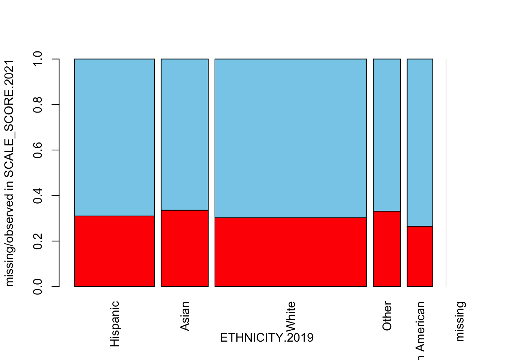
There is not much differential impact, which makes sense given that ETHNICITY was not used in the amputation calculation (but there may certainly be interactions with other factors playing out here).
Next we’ll look at the interplay between FRL, ELL and missingness
mosaicMiss(
Test_Data_WIDE[[m]][,
c("FREE_REDUCED_LUNCH_STATUS.2019",
"ELL_STATUS.2019",
"SCALE_SCORE.2021")],
highlight = 3, plotvars = 1:2, miss.labels = FALSE)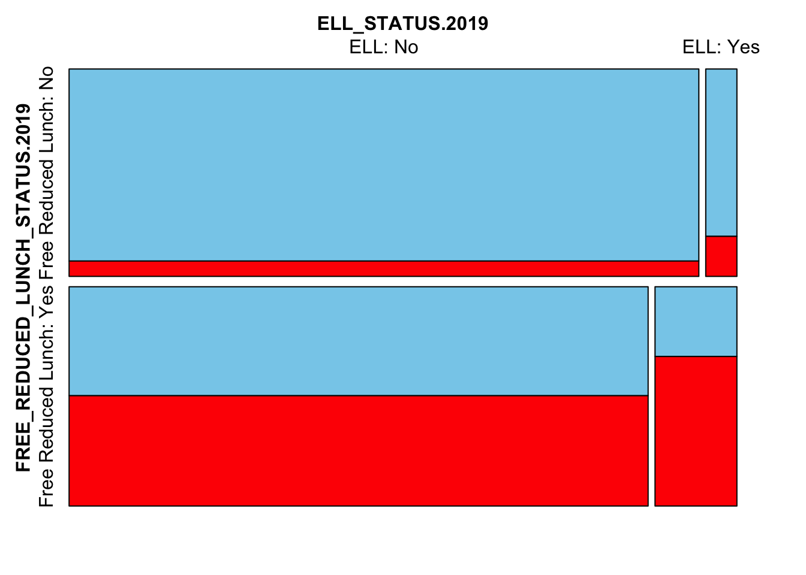
Here we see that FRL and ELL students are more likely to be missing in 2021. This is very much the case for students who are both FRL and ELL. Too much so? We may need to change the ampute.var.weights to downweight particular variables.
Now we’ll look at missingness related to prior scale scores. First lets look at what we started with in the SGPdata::sgpData_LONG_COVID. We will widen it similar to the way we widened the amputed data above.
sgpData_WIDE_COVID <- data.table::dcast(
data_to_ampute[YEAR %in% c("2019", "2021") & VALID_CASE == "VALID_CASE"],
ID + CONTENT_AREA ~ YEAR, sep=".", drop=FALSE, value.var=c("GRADE", "SCALE_SCORE"))
## Trim things down with all NAs (79 cases) and fill in some missing info (partial.fill)
sgpData_WIDE_COVID <- sgpData_WIDE_COVID[!(is.na(GRADE.2019) & is.na(GRADE.2021))]
sgpData_WIDE_COVID[is.na(GRADE.2019), GRADE.2019 := as.numeric(GRADE.2021)-2L]
sgpData_WIDE_COVID[is.na(GRADE.2021), GRADE.2021 := as.numeric(GRADE.2019)+2L]
sgpData_WIDE_COVID <- sgpData_WIDE_COVID[GRADE.2021 %in% 5:8]
sgpData_WIDE_COVID <- sgpData_WIDE_COVID[GRADE.2019 %in% 3:6]Now we will create some plots from the unaltered data (note this is scores for all grades, and scale is not standardized)
histMiss(as.data.frame(sgpData_WIDE_COVID[, c("SCALE_SCORE.2019", "SCALE_SCORE.2021")]), breaks=25, interactive=FALSE)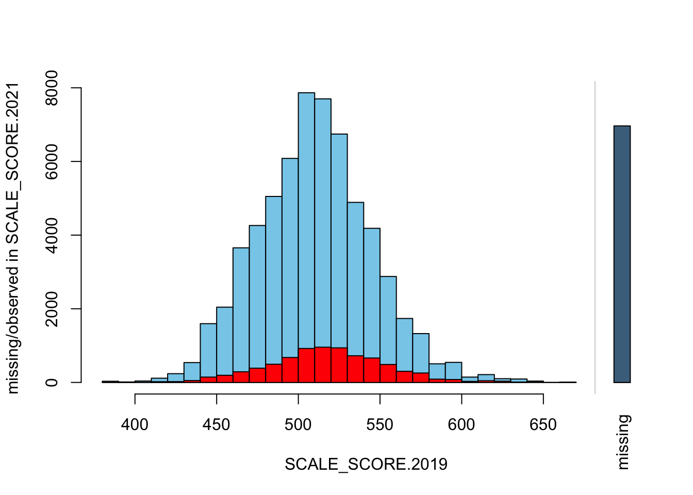
marginplot(as.data.frame(sgpData_WIDE_COVID[, c("SCALE_SCORE.2019", "SCALE_SCORE.2021")]))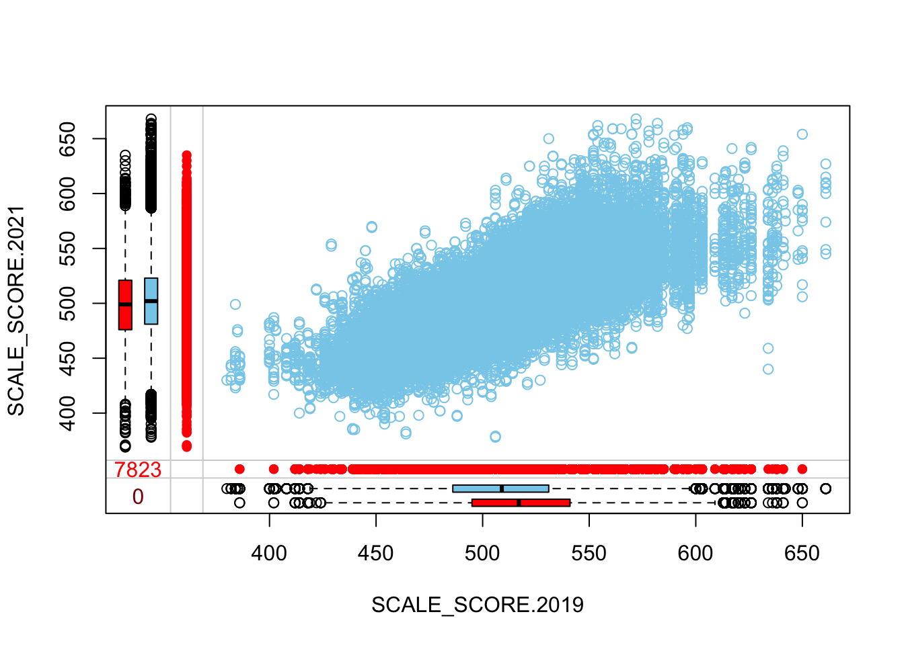
scattmatrixMiss(as.data.frame(sgpData_WIDE_COVID[, c("SCALE_SCORE.2019", "SCALE_SCORE.2021")]), interactive=FALSE)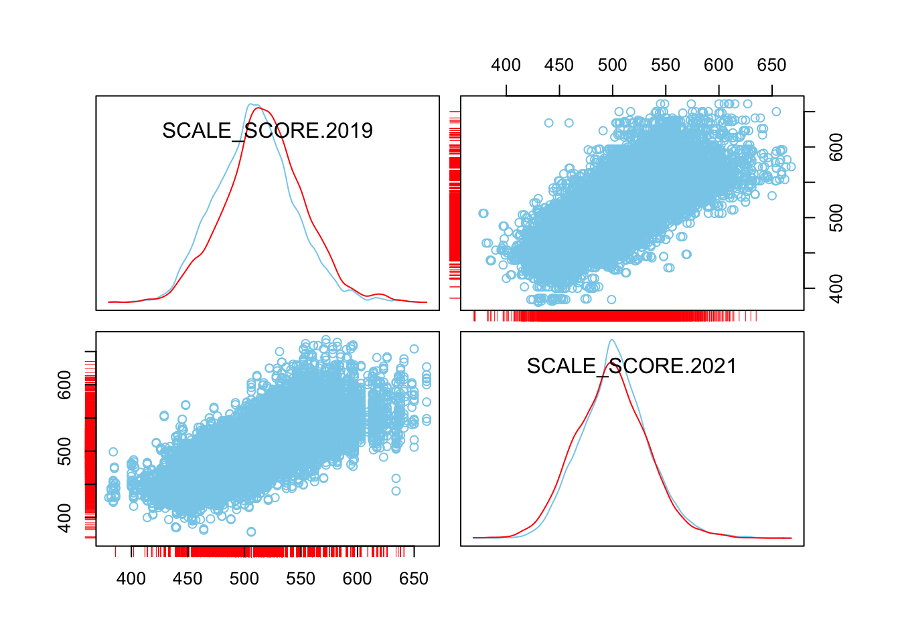
Compare those with what we have in one of our amputated datasets: Change m to see results from other amputations, and run the same plot types for unaltered/amputed data back to back.
histMiss(as.data.frame(Test_Data_WIDE[[m]][, c("SCALE_SCORE.2019", "SCALE_SCORE.2021")]), breaks=25, interactive=FALSE, only.miss=FALSE)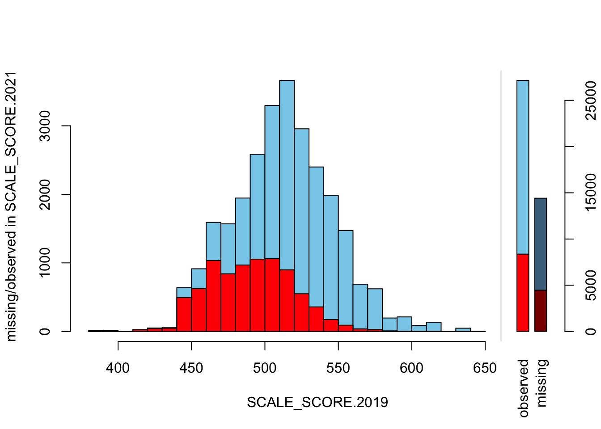
marginplot(as.data.frame(Test_Data_WIDE[[m]][, c("SCALE_SCORE.2019", "SCALE_SCORE.2021")]))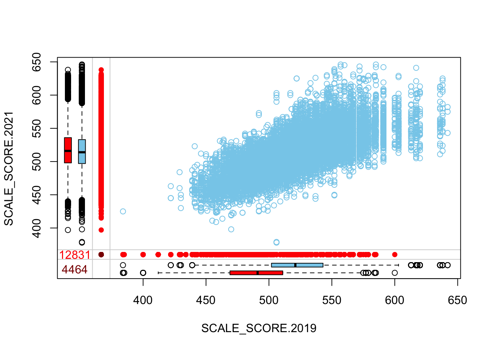
scattmatrixMiss(as.data.frame(Test_Data_WIDE[[m]][, c("SCALE_SCORE.2019", "SCALE_SCORE.2021")]), interactive=FALSE)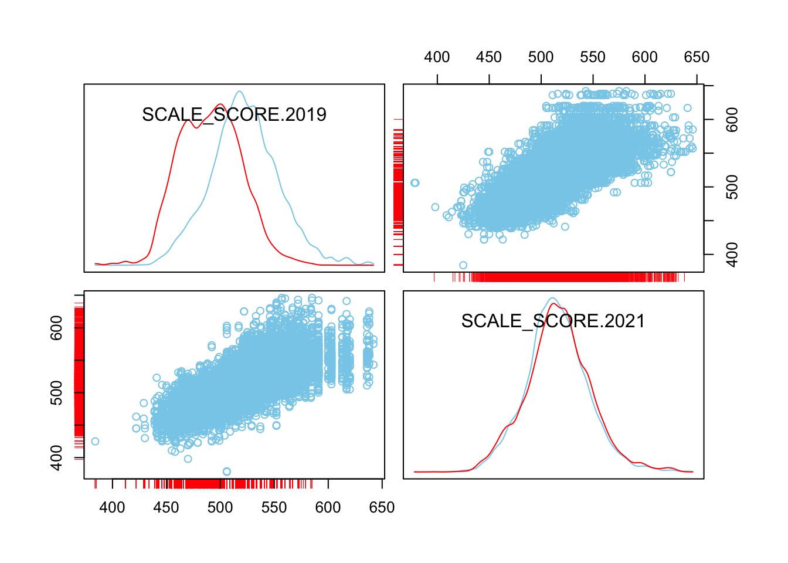
What we see is that in the unaltered data the 2021 missing cases are more-or-less randomly distributed given 2019 observed scores. After amputation, however, the missing case distribution is heavily concentrated in lower prior score observations.
Check out similar plots for GRADE specific subsets:
histMiss(as.data.frame(Test_Data_WIDE[[m]][GRADE.2021 == "8",
c("SCALE_SCORE.2019", "SCALE_SCORE.2021")]), breaks=25, interactive=FALSE)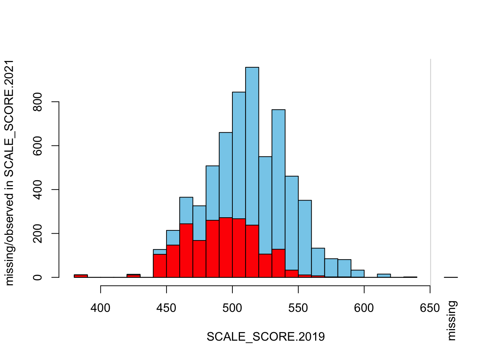
marginplot(as.data.frame(Test_Data_WIDE[[m]][GRADE.2021 == "8",
c("SCALE_SCORE.2019", "SCALE_SCORE.2021")]))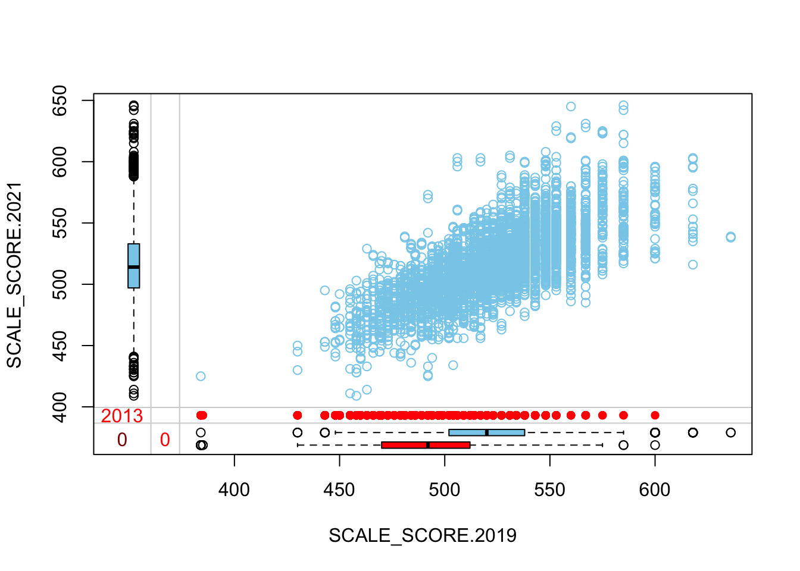
scattmatrixMiss(as.data.frame(Test_Data_WIDE[[m]][GRADE.2021 == "8",
c("SCALE_SCORE.2019", "SCALE_SCORE.2021")]), interactive=FALSE)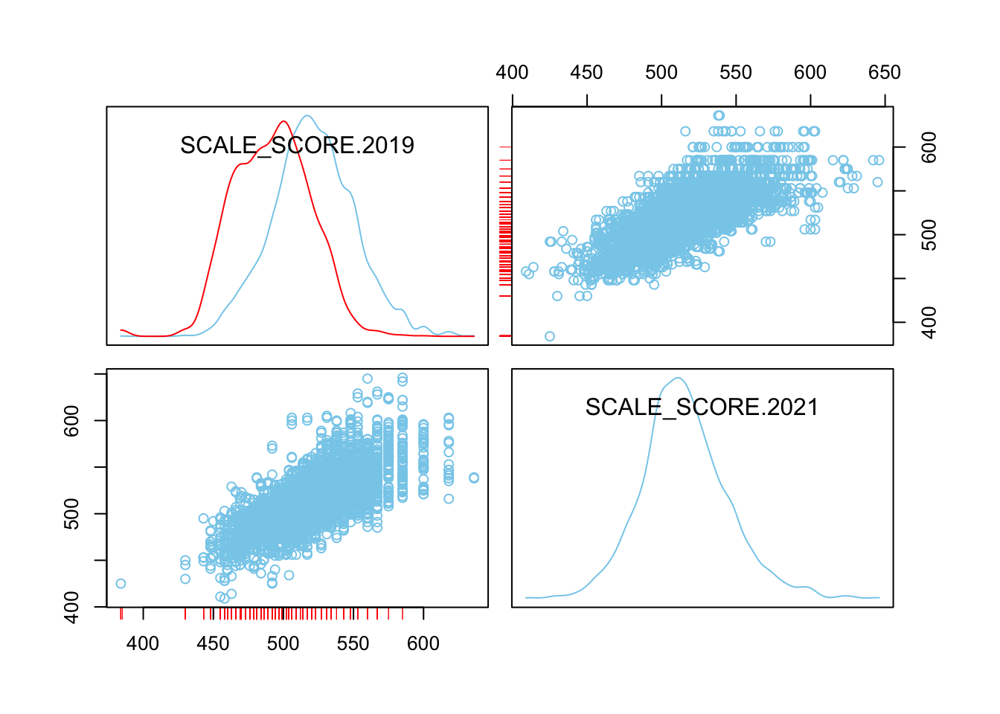
Check status only grades for desired missing patterns:
mosaicMiss(Test_Data_WIDE[[m]][GRADE.2021 == "3",
c("FREE_REDUCED_LUNCH_STATUS.2019", "ELL_STATUS.2019", "SCALE_SCORE.2021")],
highlight = 3, plotvars = 1:2, miss.labels = FALSE)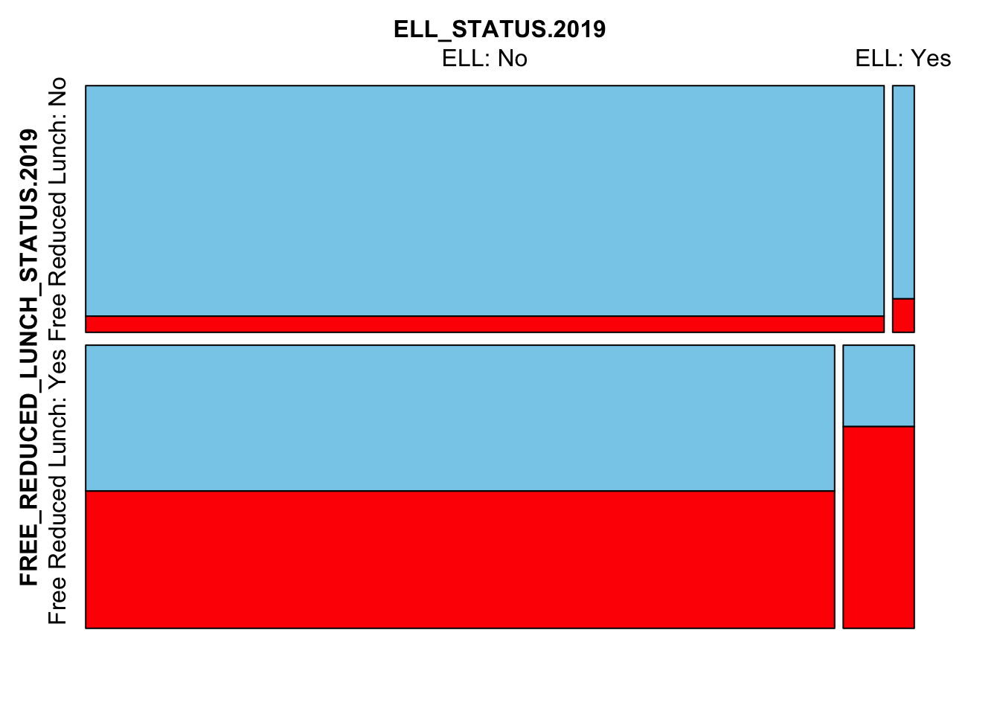
Lastly, we can look at the amputed data relative to what we know to be “true”. Even though we didn’t specify a MNAR missing pattern, we see that missingness is highly correlated with unobserved (current) score because we’ve used prior scores to determine the probability of missingness. Given their high correlation we see that play out in the amputed data as well.
histMiss(
as.data.frame(Test_Data_WIDE[[m]][,
c("SCALE_SCORE_COMPLETE.2021", "SCALE_SCORE.2021")]),
breaks=25, interactive=FALSE)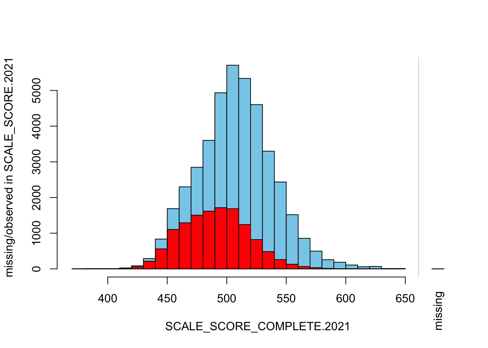
histMiss(
as.data.frame(Test_Data_WIDE[[m]][GRADE.2021 == "3",
c("SCALE_SCORE_COMPLETE.2021", "SCALE_SCORE.2021")]),
breaks=25, interactive=FALSE)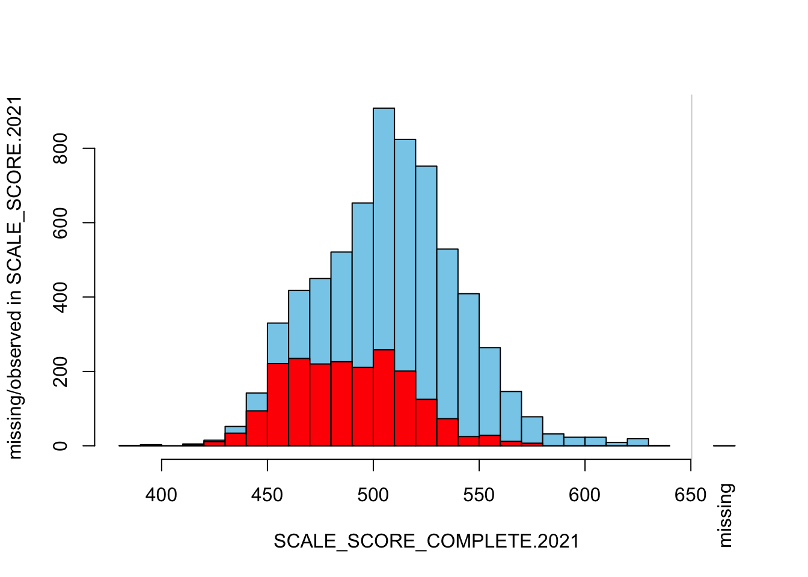
histMiss(
as.data.frame(Test_Data_WIDE[[m]][GRADE.2021 == "8",
c("SCALE_SCORE_COMPLETE.2021", "SCALE_SCORE.2021")]),
breaks=25, interactive=FALSE)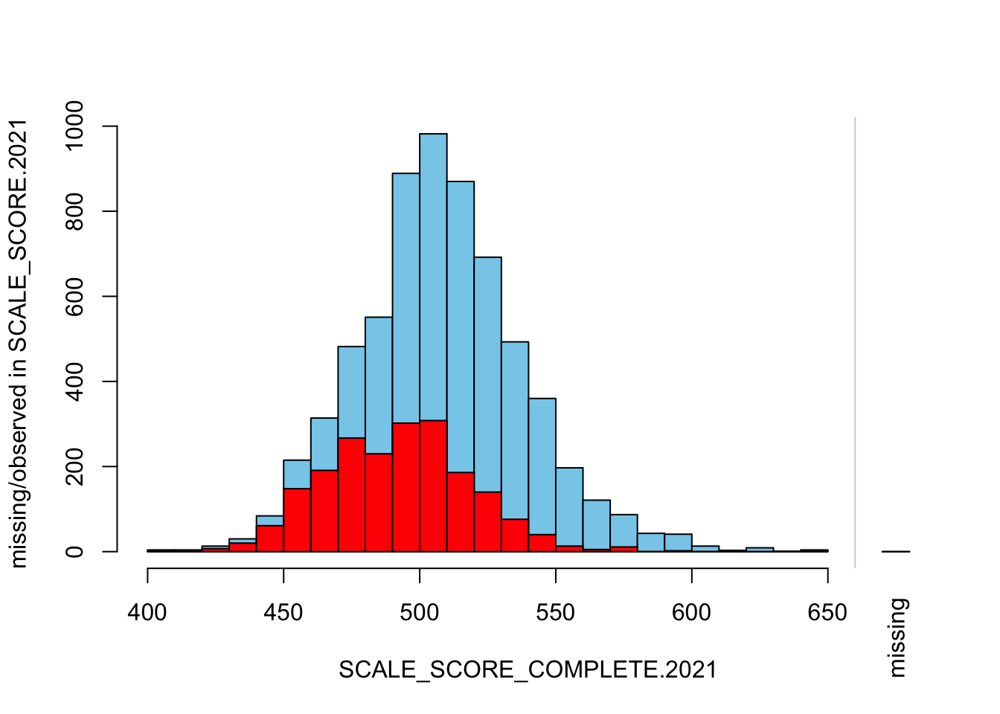
The “marginplot” shows that the “observed” 2021 scores are identical to the “actual” scores (blue dots along a perfect diagonal) - those are unaltered. The distribution of the missing scores is skewed towards the lower end of achievement according to the (red) boxplot.
histMiss(
as.data.frame(Test_Data_WIDE[[m]][,
c("SCALE_SCORE_COMPLETE.2021", "SCALE_SCORE.2021")]),
breaks=25, interactive=FALSE)
marginplot(
as.data.frame(Test_Data_WIDE[[m]][,
c("SCALE_SCORE_COMPLETE.2021", "SCALE_SCORE.2021")]))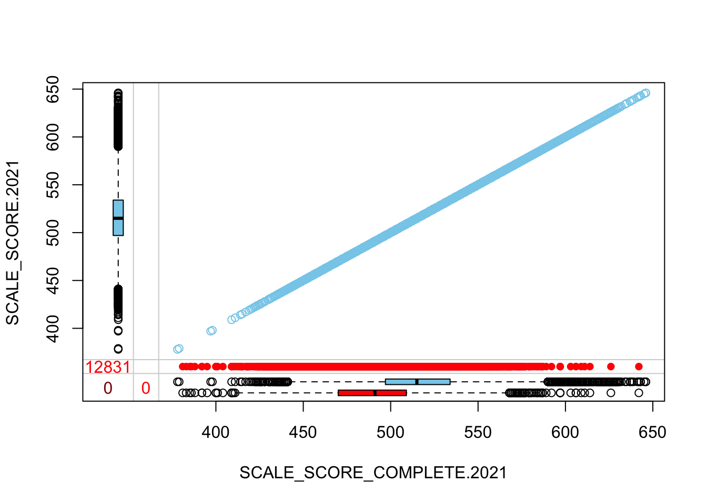
## GROWTH grades only
histMiss(
as.data.frame(Test_Data_WIDE[[m]][!GRADE.2021 %in% c("3", "4"),
c("SCALE_SCORE_COMPLETE.2021", "SCALE_SCORE.2021")]),
breaks=25, interactive=FALSE)marginplot(
as.data.frame(Test_Data_WIDE[[m]][!GRADE.2021 %in% c("3", "4"),
c("SCALE_SCORE_COMPLETE.2021", "SCALE_SCORE.2021")]))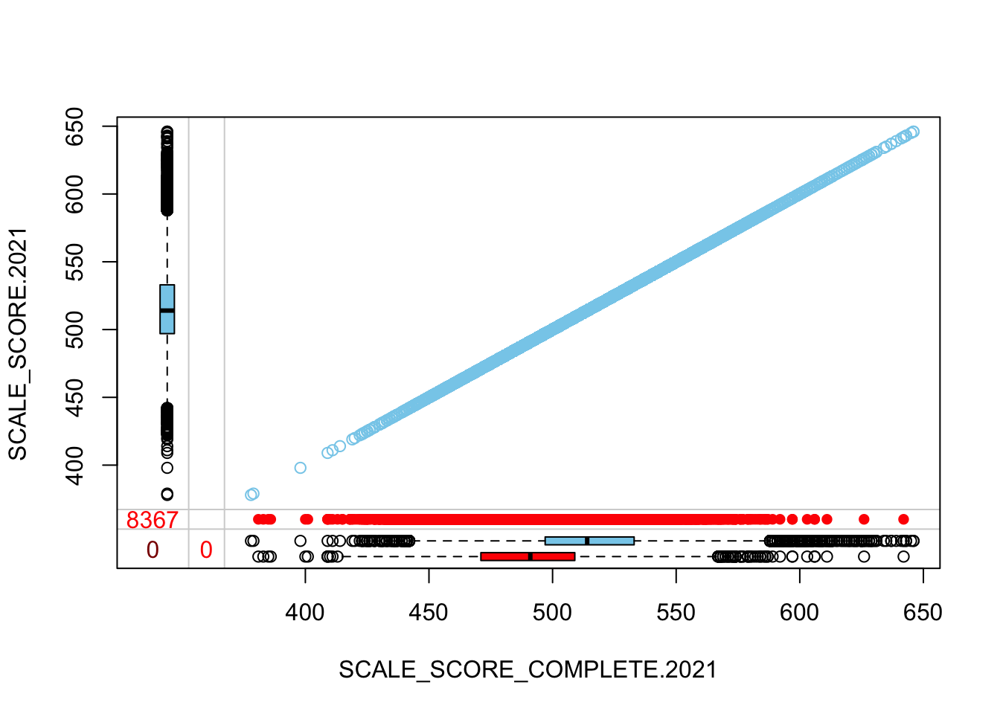
## STATUS grades only
histMiss(
as.data.frame(Test_Data_WIDE[[m]][GRADE.2021 %in% c("3", "4"),
c("SCALE_SCORE_COMPLETE.2021", "SCALE_SCORE.2021")]),
breaks=25, interactive=FALSE)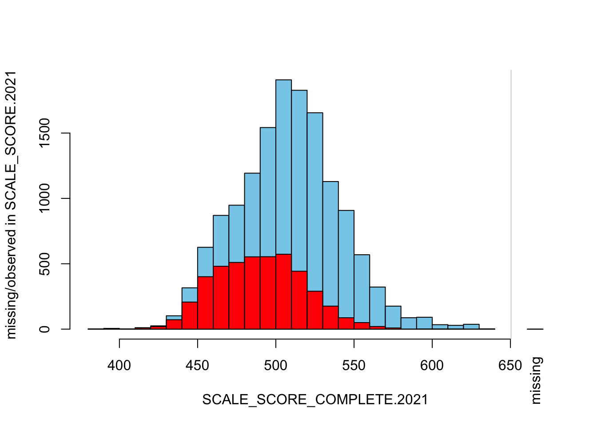
marginplot(
as.data.frame(Test_Data_WIDE[[m]][GRADE.2021 %in% c("3", "4"),
c("SCALE_SCORE_COMPLETE.2021", "SCALE_SCORE.2021")]))
Missing data analysis
In the following we run through a quick pooling of the results from the 10 amputed data sets to see how they differ from the “known truth”. This analysis focuses on school mean scale scores by grade, but similar analyses can be used with different aggregates and/or using different variables of interest (e.g., SGPs) as well.
school_means <- vector(mode = "list", length = length(Test_Data_LONG))
for (m in seq(MM)) {
sch_mean <-
Test_Data_LONG[[m]][YEAR %in% c("2019", "2021"), list(
Mean_SS_SCHOOL = mean(SCALE_SCORE, na.rm=TRUE),
SD_SS_SCHOOL = sd(SCALE_SCORE, na.rm=TRUE),
Mean_SS_SCHOOL_COMPLETE = mean(SCALE_SCORE_COMPLETE, na.rm=TRUE),
SD_SS_SCHOOL_COMPLETE = sd(SCALE_SCORE_COMPLETE, na.rm=TRUE),
N = .N, PRESENT = sum(!is.na(SCALE_SCORE)),
MISSING = sum(is.na(SCALE_SCORE))),
keyby = c("YEAR", "CONTENT_AREA", "GRADE", "SCHOOL_NUMBER")]
school_means[[m]] <- dcast(sch_mean, CONTENT_AREA + GRADE + SCHOOL_NUMBER ~ YEAR,
value.var = c("Mean_SS_SCHOOL", "SD_SS_SCHOOL", "Mean_SS_SCHOOL_COMPLETE",
"SD_SS_SCHOOL_COMPLETE", "N", "PRESENT", "MISSING"),
sep=".", drop=FALSE)
}
school_means <- rbindlist(school_means)
school_means[, c("Mean_SS_SCHOOL_COMPLETE.2019", "SD_SS_SCHOOL_COMPLETE.2019") := NULL]
setkeyv(school_means, c("CONTENT_AREA", "GRADE", "SCHOOL_NUMBER"))
pooled_school_means <- school_means[, list(
Mean_SS_SCHOOL__2019 = mean(Mean_SS_SCHOOL.2019, na.rm=TRUE), # Should all be the same
Mean_SD_SCHOOL__2019 = mean(SD_SS_SCHOOL.2019, na.rm=TRUE),
Mean_SS_SCHOOL__2021 = mean(Mean_SS_SCHOOL.2021, na.rm=TRUE),
SD_Mean_SS_SCHOOL__2021 = sd(Mean_SS_SCHOOL.2021, na.rm=TRUE),
Mean_SD_SCHOOL__2021 = mean(SD_SS_SCHOOL.2021, na.rm=TRUE),
Mean_SS_SCHOOL_COMPLETE__2021 = mean(Mean_SS_SCHOOL_COMPLETE.2021, na.rm=TRUE),
Mean_SD_SCHOOL_COMPLETE__2021 = mean(SD_SS_SCHOOL_COMPLETE.2021, na.rm=TRUE),
Mean_Present = mean(PRESENT.2021, na.rm=TRUE),
Mean_Missing = mean(MISSING.2021, na.rm=TRUE)), keyby=c("CONTENT_AREA", "GRADE", "SCHOOL_NUMBER")]Now we take a quick look at the pooled results. In the first table we see that school mean scale scores have increased from 2019 to 2021. This is due in part to the removal of more lower achieving students, on average.
# Note this object has rows for each grade/content in all schools (grades 6-8 for elementary schools & 3-5 for middle schools)
pooled_school_means[(!is.na(Mean_SS_SCHOOL__2019) & !is.na(Mean_SS_SCHOOL__2021)), # remove noted schools
as.list(round(summary(Mean_SS_SCHOOL__2021-Mean_SS_SCHOOL__2019, na.rm=TRUE), 2)),
keyby=c("CONTENT_AREA", "GRADE")]## CONTENT_AREA GRADE Min. 1st Qu. Median Mean 3rd Qu. Max.
## 1: ELA 3 -40.19 -7.10 1.12 2.36 11.09 50.72
## 2: ELA 4 -31.74 -5.80 -0.06 1.57 10.15 43.54
## 3: ELA 5 -41.45 -8.48 1.32 1.94 10.22 73.22
## 4: ELA 6 -54.37 -7.18 3.44 1.46 9.57 56.05
## 5: ELA 7 -34.31 -4.90 1.42 3.40 11.00 53.94
## 6: ELA 8 -23.86 -5.78 2.98 3.98 12.74 42.31We can also look at how different the 2021 amputed mean scores are from the “true” mean scores. This shows us how biased the means are by the missing data (about 6 points too high, on average).
pooled_school_means[(!is.na(Mean_SS_SCHOOL_COMPLETE__2021) & !is.na(Mean_SS_SCHOOL__2021)),
as.list(round(summary(Mean_SS_SCHOOL_COMPLETE__2021-Mean_SS_SCHOOL__2021, na.rm=TRUE), 2)),
keyby=c("CONTENT_AREA", "GRADE")]## CONTENT_AREA GRADE Min. 1st Qu. Median Mean 3rd Qu. Max.
## 1: ELA 3 -39.81 -9.30 -4.39 -6.42 -1.13 4.32
## 2: ELA 4 -40.15 -9.28 -4.26 -6.35 -1.03 7.33
## 3: ELA 5 -65.01 -9.43 -4.98 -6.55 -1.19 11.31
## 4: ELA 6 -41.23 -8.76 -3.94 -5.99 -1.16 23.12
## 5: ELA 7 -31.72 -9.54 -6.18 -7.58 -3.54 11.88
## 6: ELA 8 -24.90 -8.55 -5.25 -6.69 -2.45 6.47In addition to the artificially inflated mean scores, the “true” variation in scores (within schools) is larger than in the amputed data.
pooled_school_means[(!is.na(Mean_SD_SCHOOL_COMPLETE__2021) & !is.na(Mean_SD_SCHOOL__2021)), # remove noted schools
as.list(round(summary(Mean_SD_SCHOOL_COMPLETE__2021-Mean_SD_SCHOOL__2021, na.rm=TRUE), 2)),
keyby=c("CONTENT_AREA", "GRADE")]## CONTENT_AREA GRADE Min. 1st Qu. Median Mean 3rd Qu. Max.
## 1: ELA 3 -10.03 -0.09 0.27 0.83 2.10 12.62
## 2: ELA 4 -11.04 -0.31 0.27 0.73 1.55 16.98
## 3: ELA 5 -16.85 -0.07 0.79 1.88 2.96 21.75
## 4: ELA 6 -15.75 -0.03 0.63 1.31 2.11 27.09
## 5: ELA 7 -6.42 0.28 1.10 2.71 3.25 35.95
## 6: ELA 8 -7.35 0.00 0.84 1.24 1.79 18.29